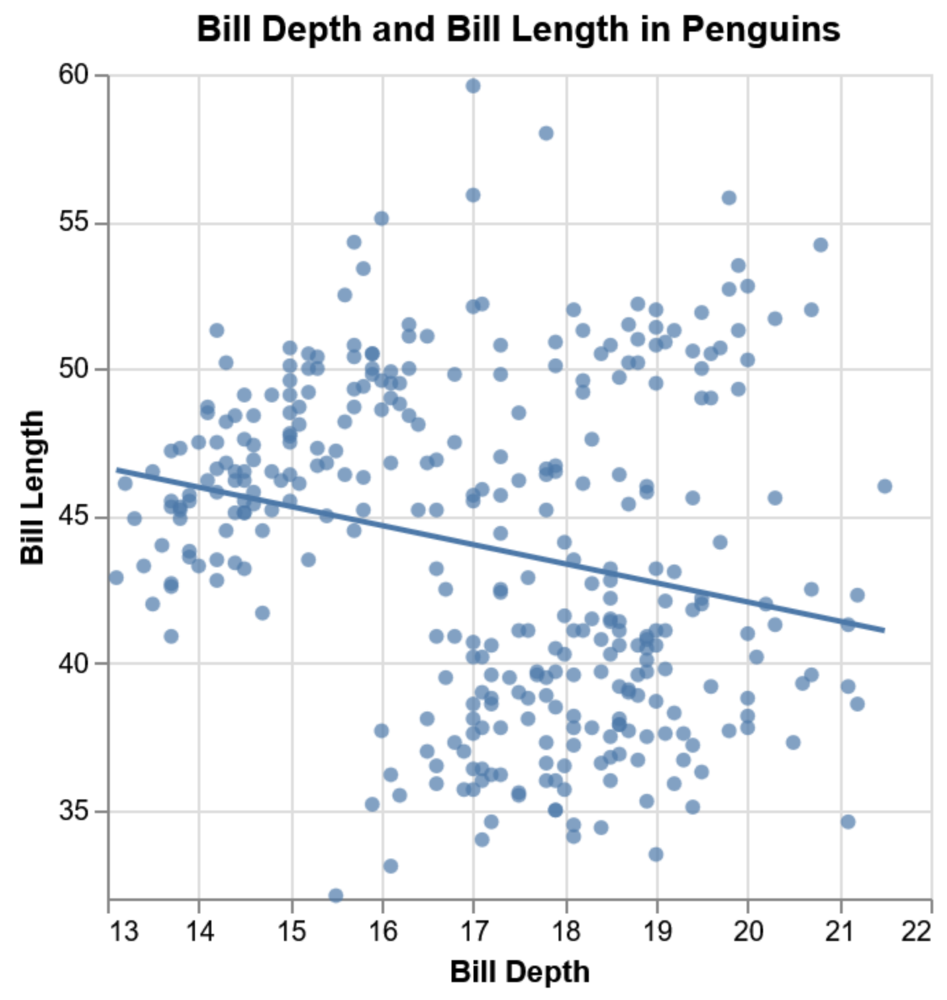
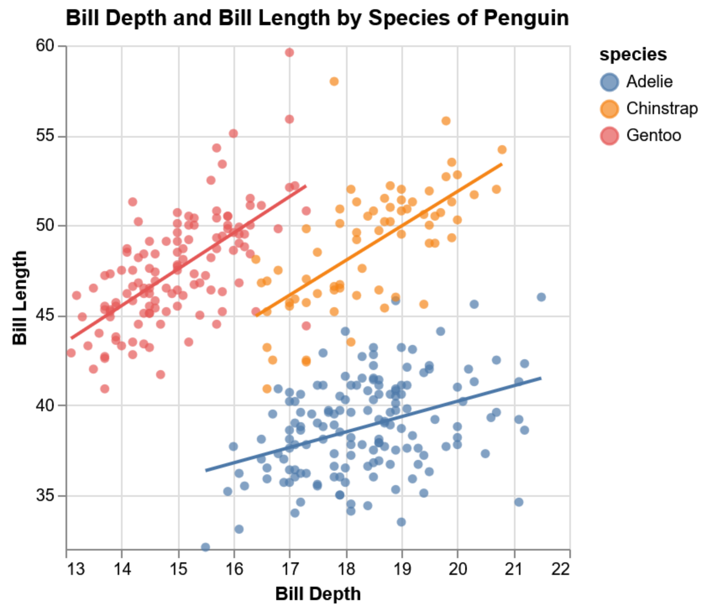

Topics Covered
Continuous Y ~ Continuous X
Standard Linear Regression: Predict body mass from flipper length. Intercept, slope, and residuals.
Continuous Y ~ Categorical X
Dummy Coding: How R handles factors (like sex) to estimate group differences in mass.
Categorical Y ~ Continuous X
Logistic Regression: Using GLM to predict binary outcomes (sex) with an S-shaped probability curve.
Visual Insights: Simpson's Paradox
Simple regression can be misleading if you ignore group structure. Notice how the trend reverses when sex is included.

Aggregated Data

Disaggregated by Sex
Key Concepts
- Interpreting coefficients: what a one-unit change in X really means for Y
- Dummy coding: How categorical predictors are mapped to intercepts and offsets
- Logistic regression (GLM): Modelling log-odds and predicting probabilities
- Odds Ratios: Converting model estimates into intuitive risk/chance values
Homework
- Run
ThreeModels.Rto compare Linear vs Logistic approaches - Calculate the Odds Ratio for a 100g increase in body mass
- Plot the logistic regression curve using
geom_line()and predicted probabilities